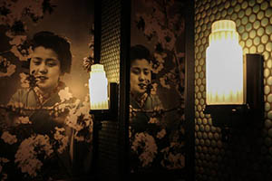
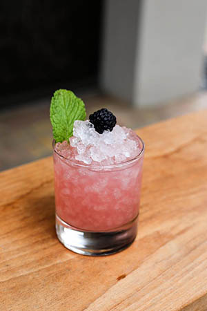

Looking for a casual night out with friends? Hanzo bar on Broadway is a quaint, speakeasy style bar with a fantastic happy hour everyday from 5-7pm and a reverse happy hour from 11pm-12am.
Hidden in the middle of a business building. Hanzo bar is the perfect oasis, great for a night out with friends or a romantic evening for 2. It also has great patio with a stylish asian theme. This Japanese style bar is adorned with red lanterns and dim lighting that takes you east part of the world. The drinks were handcrafted and deliciously made. The food was a terrific and easily shared. Nothing but fantastic flavors, great service and great time had here. Make sure and check out Hanzo on Broadway for your fun night out. Photos from https://www.hanzobar.com
 
Happy hour cocktails include the: